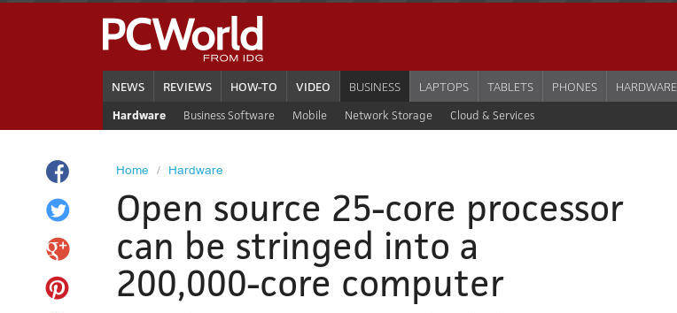

Perl 6: What Programming In The Future Is Like?
by
Zoffix Znet
Rakudo Perl 6 Core Dev
 @zoffix
@zoffix
(Use left/right arrows to navigate the slides)
Hash Some Passwords
use Crypt::Bcrypt;
my @passes = rand.Str xx 32;
my @hashes;
for @passes {
@hashes.push: bcrypt-hash $^pass, :15rounds;
}
say @hashes;
Slow on purpose
use Crypt::Bcrypt;
my @passes = rand.Str xx 32;
my @hashes;
for @passes {
@hashes.push: bcrypt-hash $^pass, :15rounds;
}
say @hashes;
Takes 63 seconds to run
My Home Computer = 4 cores
$3,379 = 14 cores
Google Compute Engine = 32 cores

Princeton University = 200,000 cores

full article: bit.do/zoffix
Program = 1 core
use Crypt::Bcrypt;
my @passes = rand.Str xx 32;
my @hashes;
for @passes {
@hashes.push: bcrypt-hash $^pass, :15rounds;
}
say @hashes;
WHY?
Need MORE CODE
= more bugs
= More Time
= More $$$
How Many Extra Lines of Code, to make our program multi-threaded?
There's
NO LANGUAGE on the planet
that can do better
than Perl 6
We need
ZERO
extra lines of code
We need
ZERO
extra lines of code
only two words
Multi-Threaded
use Crypt::Bcrypt;
my @passes = rand.Str xx 32;
my @hashes;
for @passes {
@hashes.push: start bcrypt-hash $^pass, :15rounds;
}
say await @hashes;
(actual test runs)
Original: 63 seconds to run
4-cores: 18 seconds to run
32-cores: 3.1 seconds to run
2,000% faster with just
2 extra words of code
But Wait, There's More!
Rewrite To Be Shorter
use Crypt::Bcrypt;
my @passes = rand.Str xx 32;
my @hashes;
for @passes {
@hashes.push: bcrypt-hash $^pass, :15rounds;
}
say @hashes;
Single-Threaded
use Crypt::Bcrypt;
my @passes = rand.Str xx 32;
my @hashes = @passes.map: {bcrypt-hash $^pass, :15rounds};
say @hashes;
Multi-Threaded
use Crypt::Bcrypt;
my @passes = rand.Str xx 32;
my @hashes = @passes.race.map: {bcrypt-hash $^pass, :15rounds};
say @hashes;
But Wait, There's EVEN More!
This is a hyper
operator:
»
@bunch-of-things».call-this-method-on-every-item;
Make it shorter!
use Crypt::Bcrypt;
my @passes = rand.Str xx 32;
say @passes».&bcrypt-hash: :15rounds;
SHRTR!
use Crypt::Bcrypt;
say (rand.Str xx 32)».&bcrypt-hash: :15rounds;
But what about all of our cores?
use Crypt::Bcrypt;
say (rand.Str xx 32)».&bcrypt-hash: :15rounds;
2016: Single-Threaded
2018: Auto-Threaded
use Crypt::Bcrypt;
say (rand.Str xx 32)».&bcrypt-hash: :15rounds;
Let the compiler figure this stuff out.
There's more cool concurrency stuff
Promises. Supplies. Channels.
Junctions. Feeds.
All part of the language!
(not modules)
What Programming In The Future Is Like?
More cores. More Perl 6.
Check it out today
perl6.org
Thank you!